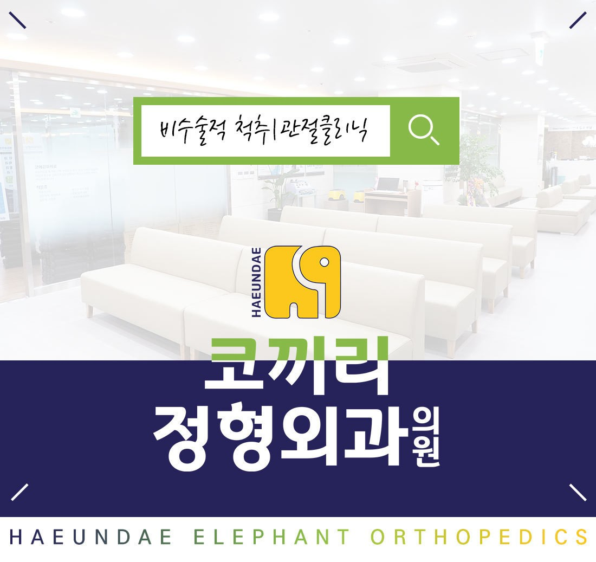

반갑습니다! 정형외과 전문의 하정한입니다.
코끼리정형외과는 다수의 통증치료 경험을 바탕으로 환자분들의 통증 치료를 책임지고자 노력하고 있습니다.
여러분과 맺은 인연으로 따뜻한 주치의가 되어 늘 가까이에서 보다 편리하고 편안한 진료를 제공함으로써 평생 주치의가 되고자 하는 마음으로 진료에 임하겠습니다.
앞으로도 친절한 맞춤형 진료로 끊임없이 발전하는 모습을 보여드리겠습니다.
감사합니다.
부산대학교 의과대학 졸업
메리놀병원 정형외과 전공의 수료
서울대학교 보라매병원 정형외과 전임의 수료
서울대학교 정형외과 임상교수
前) 메리놀병원 정형외과 과장
前) 부산마이크로병원 정형외과 과장
前)함내과정형외과 정형외과 과장
前)한양류마디병원 정형외과 과장
現) 해운대코끼리정형외과 원장
경피적 신경성형술 1500례 (Navi cath.& Racz cath.)
중재적 통증시술 관절치료 20,000회 돌파
척추디스크 신경차단술 25,000회 돌파
대한 정형외과 학회 정회원
대한정형통증의학회 정회원
대한척추외과학회 정회원
대한슬관절의학회 정회원
대한견주관절학회 정회원
근골격계 초음파학회 정회원
한국근골격계질환연구회 증식치료 workshop 이수
대한최소침습척추학회 cadaver workshop 이수
미국 The DeClaire Knee & Orthopaedic Institute 연수
미국 Biomet Skills Academy 이수
AOTrauma Principles Course 이수
대한 정형통증의학회 TPI 교육 이수
[논문]
Results of kyphoplasty according to the operative timing - Current Orthopaedic Practice.
21(5):489-493, 2010
Multiple Noncontiguous Fractures in Cervical Spine - J Korean Soc Spine Surg.
17(1):26-32, 2010
Total Ankle Replacement in Pigmented Villonodular Synovitis of Ankle Joint - J Korean Foot Ankle Soc.
14(1):101-104, 2010
Incidence and Risk Factors of Ipsilateral Foot and Lower Limb Reamputation in Diabetic Foot Patients - J Korean Foot Ankle Soc.
15(1):7-12, 2011
